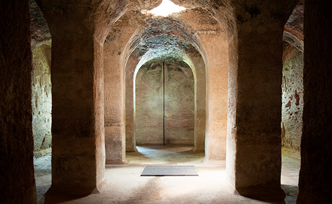
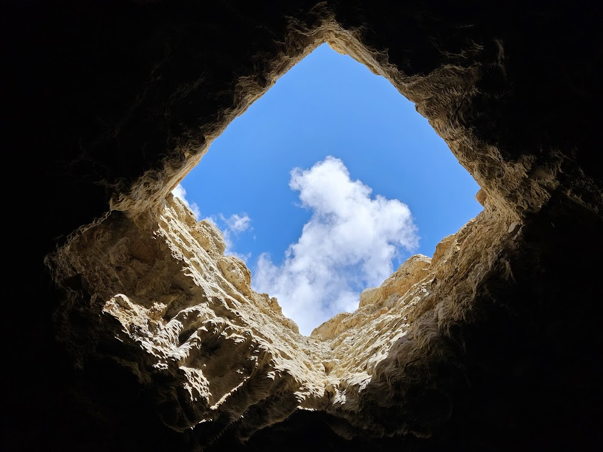
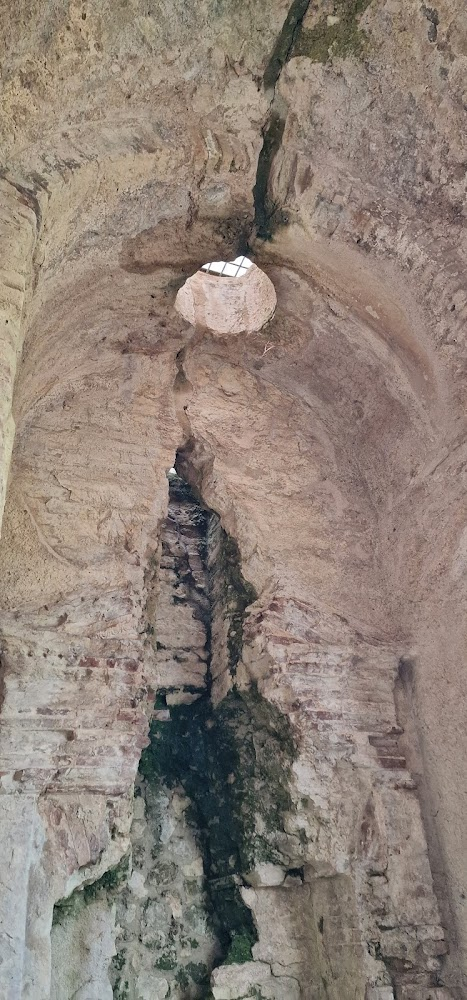
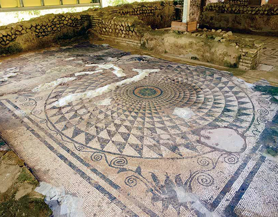
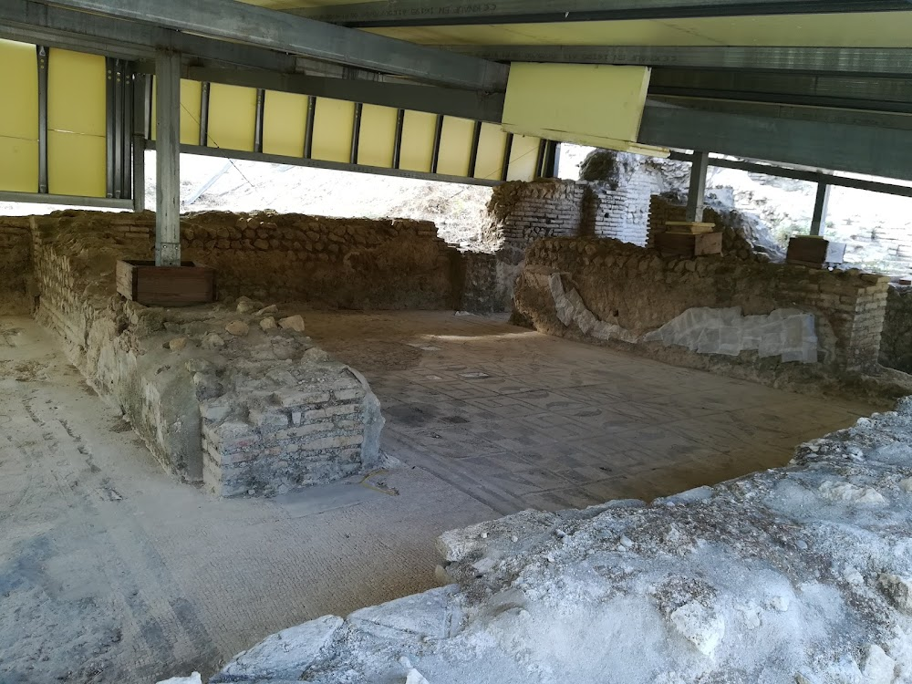

Villa Romana del Naniglio
Uno dei complessi archeologici più singolari della Calabria, con una monumentale cisterna ipogea unica nel suo genere.
Periodo
Fine I sec. a.C. - III sec. d.C.
Cisterna
17,47 x 10,27 m, 8 pilastri
Località
Contrada Annunziata, Gioiosa Ionica
Mosaici
Policromi a motivi geometrici
La Villa Romana del Naniglio
Una Residenza di Prestigio
Il Parco Archeologico del Naniglio, situato nel territorio di Gioiosa Ionica nella valle del fiume Torbido, conserva i resti di una delle più interessanti ville romane della Calabria. La villa fu edificata verso la fine del I secolo a.C. e raggiunse il massimo splendore intorno al III secolo d.C., per poi subire un lento e progressivo abbandono nei secoli successivi.
La villa apparteneva probabilmente a una ricca famiglia romana e rappresentava sia una residenza di prestigio sia il centro amministrativo di una grande proprietà agricola. Il complesso comprende ambienti residenziali decorati con mosaici, strutture architettoniche ben conservate e un imponente sistema sotterraneo per la gestione dell'acqua.
Il Capolavoro di Ingegneria
La Cisterna Sotterranea
L'elemento più spettacolare del sito è il grande complesso ipogeo, un capolavoro di ingegneria idraulica che rende il Naniglio unico in Calabria. La cisterna, risalente al II-III secolo d.C., è formata da tre ambienti comunicanti con volte sorrette da otto poderosi pilastri quadrangolari disposti su doppia fila.
All'interno misura una lunghezza di 17,47 metri e una larghezza di 10,27 metri. L'accesso avviene attraverso una spettacolare scaletta elicoidale a spirale di 24 gradini, visibile anche dall'esterno e protetta da una struttura in muratura. I lucernari sulla volta illuminano naturalmente gli ambienti sottostanti.
Il Ninfeo e gli Ambienti Minori
Due vani minori completano il complesso: il primo è sormontato da una volta a botte con lucernario circolare centrale; il secondo presenta due lucernari circolari di diversa grandezza. In questa stanza è situata un'edicola in cotto con i resti di un elegante frontone: si tratta di un Ninfeo, un luogo dedicato al culto delle acque dove si andava a godere del fresco e della penombra, e dove scorreva naturalmente dell'acqua.
L'ambiente maggiore, costruito in laterizio rivestito di intonaco, presenta sulle pareti tre orifizi tubolari con abbondanti incrostazioni calcaree, testimonianza del lungo fluire dell'acqua.
I Mosaici Policromi
Preziosi Pavimenti Figurati
Gli scavi archeologici condotti tra il 1981 e il 1986 hanno riportato alla luce il settore inferiore della villa, con ambienti residenziali decorati da pregiati pavimenti mosaicati a motivi geometrici e intonaco dipinto sulle pareti.
Di particolare pregio è il mosaico nella stanza A, che presenta una rosetta in bianco e nero con tessere centrale di pasta vitrea colorata, un elemento raro e costoso che testimonia l'elevato livello della committenza. La qualità dei mosaici e la presenza di materiali pregiati confermano l'importanza e la ricchezza della famiglia proprietaria della villa.
Successivi scavi condotti nel 2010 hanno portato alla luce un'ampia sala ottagonale e diverse canalizzazioni, una delle quali probabilmente collegata alla cisterna.
Aree Inedite e Prospettive Future
Il Quartiere Termale
Nella zona a sud della villa si trova un complesso di ruderi non ancora scavato che corrisponde probabilmente al quartiere termale. L'intera area archeologica conserva ancora numerosi segreti: gli scavi del 2010 hanno riportato alla luce solo il perimetro della sala ottagonale e parte delle canalizzazioni, ma molto resta ancora da esplorare.
Il sito, indicato dal FAI come uno dei "Luoghi del Cuore", rappresenta una testimonianza eccezionale della vita rurale romana nella Locride e un patrimonio culturale di inestimabile valore che attende di essere pienamente valorizzato.
Il Parco Archeologico Oggi
Un patrimonio da vivere
Il Parco Archeologico del Naniglio è oggi uno dei siti più suggestivi della Locride, meta di visitatori, studiosi e appassionati di archeologia. Grazie all'impegno della comunità locale e delle associazioni culturali, il sito è periodicamente aperto al pubblico e ospita visite guidate, laboratori didattici per scuole e famiglie.
Particolarmente attiva è la collaborazione con le scuole del territorio, che organizzano uscite didattiche per far conoscere agli studenti la storia romana della Calabria. I giovani possono così immergersi nell'atmosfera dell'antica villa, camminare tra i resti dei mosaici e scoprire i segreti della grande cisterna ipogea.
Un modo per mantenere viva la memoria e tramandare alle nuove generazioni la conoscenza di questo straordinario patrimonio archeologico.
Curiosità e Tradizioni
Il Ninfeo
L'edicola in cotto con frontone, ancora visibile nella stanza minore, era dedicata al culto delle acque. Qui scorreva acqua naturale e i proprietari della villa si ritiravano per godere del fresco e della penombra.
La Scala Elicoidale
La spettacolare scala a chiocciola di 24 gradini che scende nella cisterna è uno degli elementi più fotografati del sito. Un esempio simile, ma molto più monumentale, si trova a Miseno con la "Piscina Mirabilis".
La Strada Sotto Sopra
Per decenni la strada statale 281 passava proprio sopra la cisterna del Naniglio, con i veicoli che transitavano letteralmente sul tetto della villa romana, incuranti del tesoro archeologico sottostante.
Luogo del Cuore FAI
Il Naniglio è stato segnalato in numerose edizioni del censimento "I Luoghi del Cuore" del FAI, a testimonianza dell'affetto delle comunità locali per questo straordinario patrimonio.
Galleria Fotografica






Info Utili
Come Arrivare
In Auto: SS106 Jonica, uscita Gioiosa Ionica. Seguire indicazioni per Mammola (SP 281). Il sito si trova in contrada Annunziata, a pochi km dal centro abitato.
Comune e Informazioni
Comune di Gioiosa Ionica
Via Garibaldi, 14
89042 Gioiosa Ionica (RC)
Tel: 0964 51536
PEC: protocollo.gioiosa@asmepec.it
Sito web: www.comune.gioiosaionica.rc.it
Orari e Contatti
Stato attuale: Il sito non è regolarmente aperto al pubblico. In alcuni
periodi, grazie all'attività di volontari locali, è visitabile su appuntamento.
Info visite: Contattare il Comune di Gioiosa Ionica per informazioni
aggiornate.
Contatto Museo
Museo Archeologico Nazionale di Locri
Tel: 0964 390023
(Per informazioni sui siti archeologici della zona)